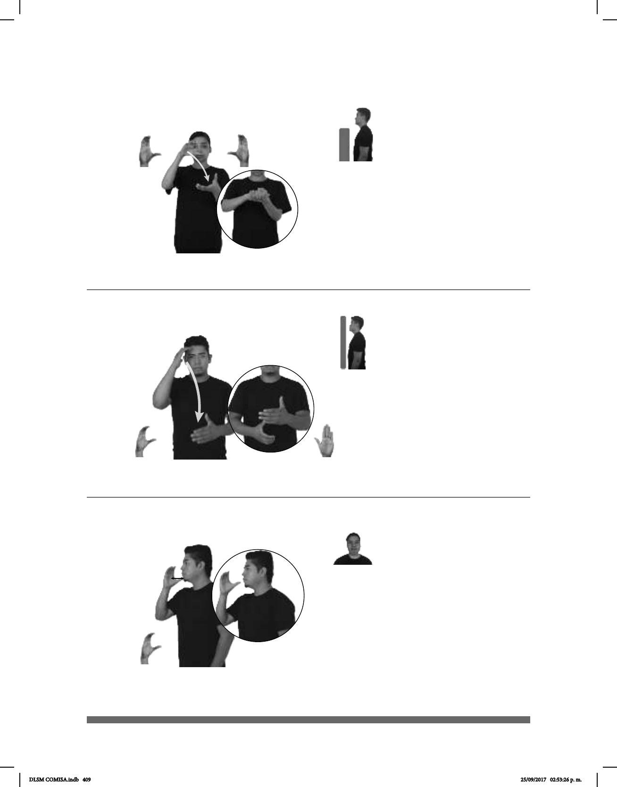

409
Seña: SB
MD y MB C.3
MD palma hacia
abajo. MD palma hacia arriba.
La MD inicia a la altura
de la cara y termina sobre MB. MB
a la altura del pecho.
MD recto.
1. v. prnl. Unirse una
persona a otra en matrimonio. 2.
sust. m. Hombre casado con
relación a su cónyuge.
(C-40)
1
2
PRÓXIMO-DOMINGO pos-MI HERMANO+MUJER CASAR
Mi hermana se casa el próximo domingo.
Seña: SB
MD C.1, MB B-P.2
MD palma oblicua hacia la
izquierda y hacia abajo. MB palma hacia
adentro.
La MD inicia sobre la frente
y termina a la altura de la cintura con el
dedo pulgar sobre el meñique de MB. MB
a la altura del pecho.
La MD se mueve formando
un arco.
adj. Que sigue la religión que
profesan los cristianos que reconocen al
Papa como representante de Dios en la
tierra.
(C-41)
pos-MI MAMÁ CATÓLICA
Mi mamá es católica.
Seña: SM
C.1
Palma hacia la
izquierda.
A la altura de la
barbilla.
La mano golpea la
barbilla con el dedo pulgar
repetidamente.
1. v. intr. Comer por la
noche. 2. sust. f. Última comida
del día que se toma al atardecer o
por la noche.
(C-42) Cenar
1
/ Cena
2
___________o.i.g.
pro-TÚ YA CENAR
¿Ya cenaste?
DLSM COMISA.indb 409 25/09/2017 02:53:26 p. m.